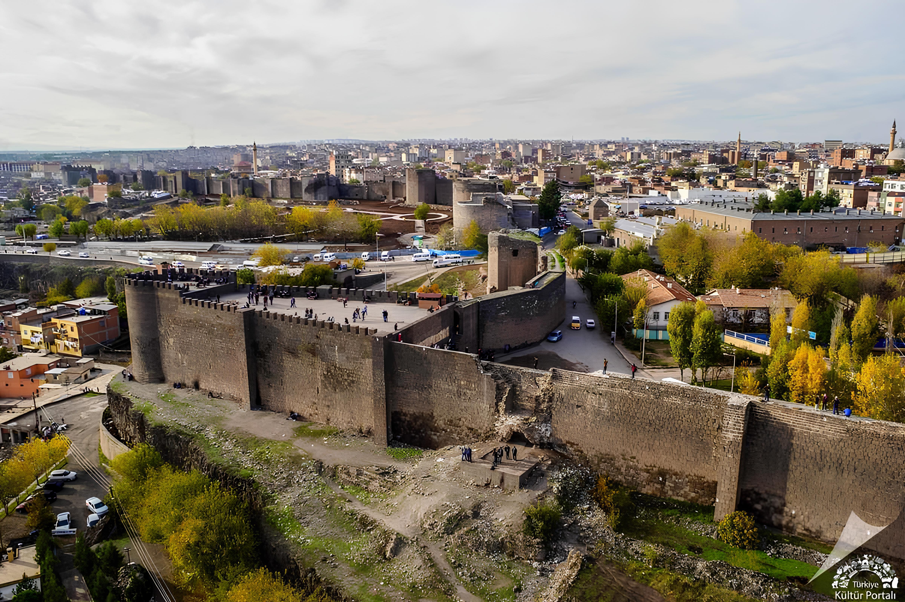
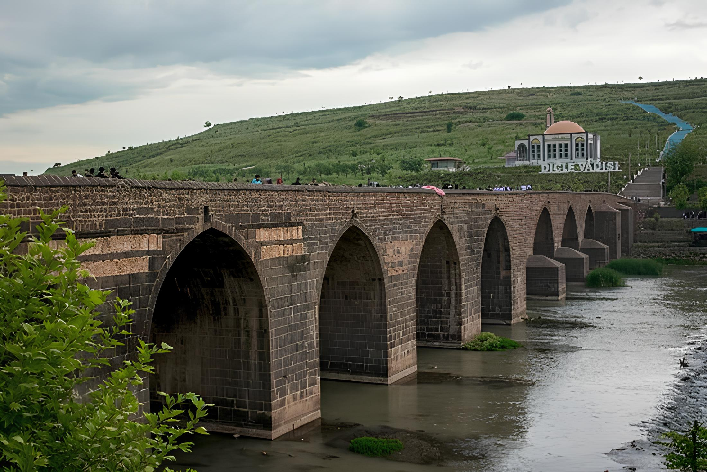
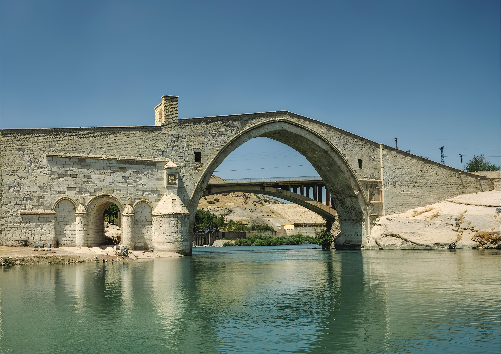
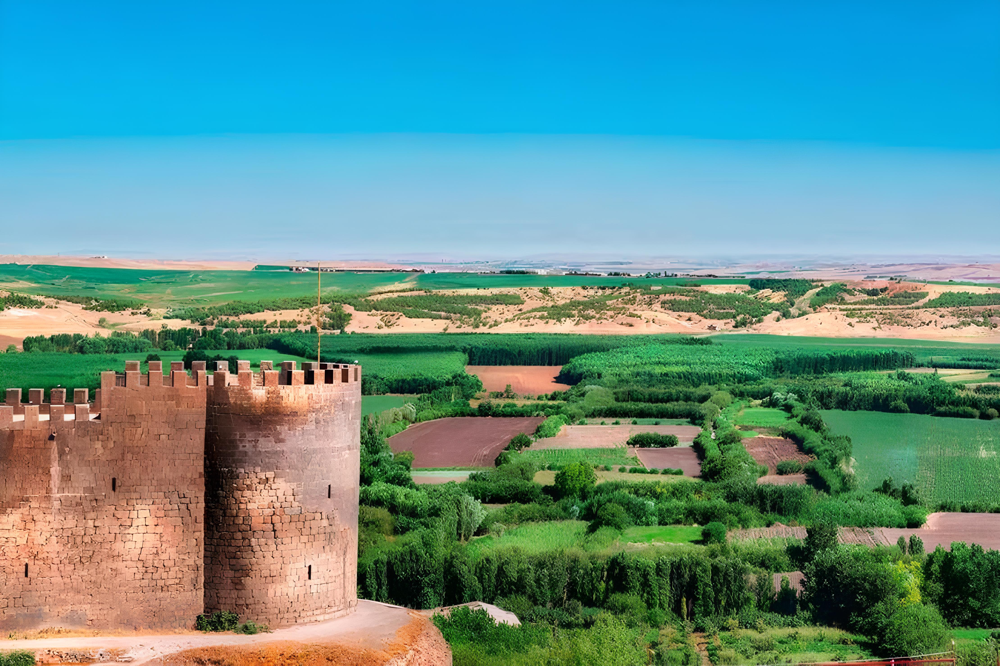
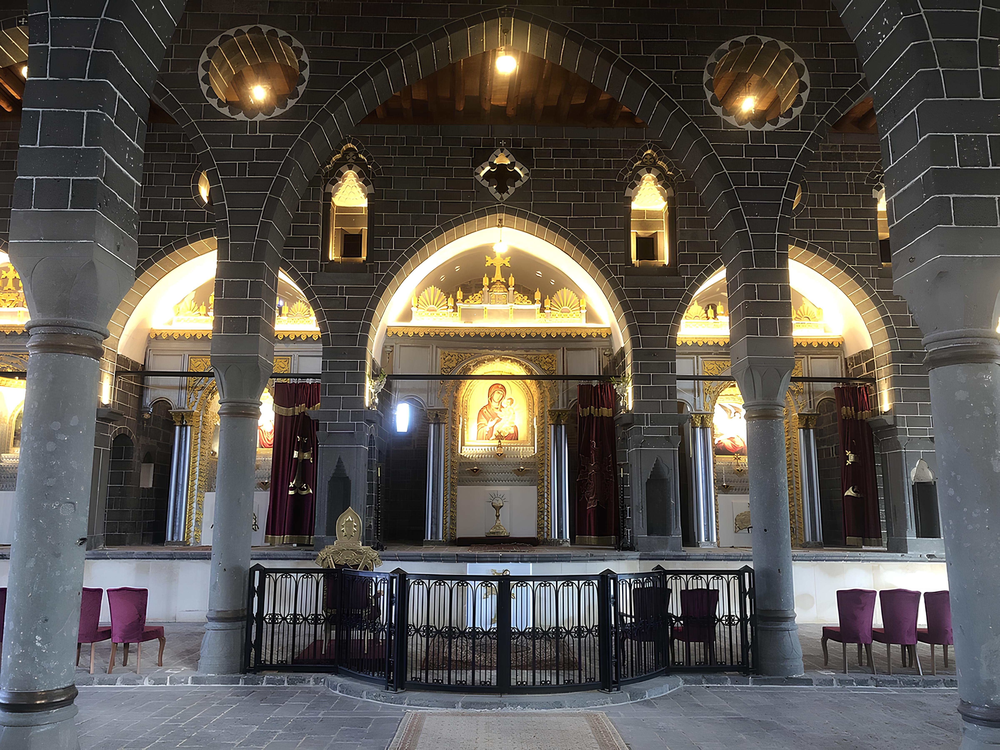
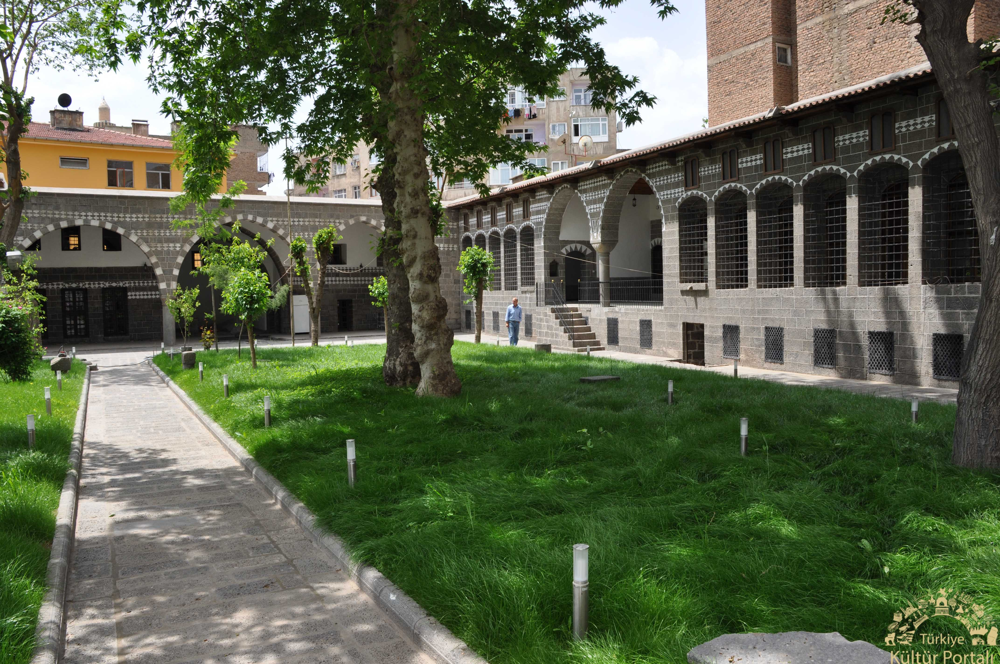
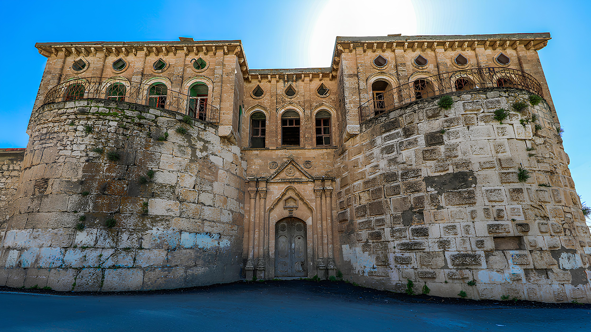

SUR
Diyarbakır’ın simgesi haline gelmiş ve bulunduğu ilçeye adını vermiş olan Diyarbakır
Surları, toplam 5 kilometre uzunluğa sahiptir. uzunluk açısından dünyada Çin Seddi ve İstanbul
Surlarından sonra gelir

Hasanpaşa Hanı
Diyarbakır’a gelen turistlerin en yoğun ziyaret ettiği mekânlardan olan Hasan Paşa Hanı,
1573 senesinde Osmanlı’da valilik görevinde bulunan Vezirzade Hasan Paşa tarafından yaptırılmıştır.

On Gözlü Köprü
On açıklığa sahip olduğu için yerel halkça On Gözlü Köprü olarak bilinirken eski Silvan
yolu güzergâhında bulunduğundan bazı kaynaklarda ise Silvan Köprüsü olarak da geçer.
.jpg)
Hz. Süleyman Cami
Hazreti Süleyman Camii, Minaresindeki kitabelerden anlaşıldığı üzere Nisanoğlu Ebul
Kasım tarafından 1155-1160 yılları arasında yaptırılmıştır.Diyarbakır’ın İslam orduları tarafından
alınışı sırasında şehit düşen diğer sahabelerin burada yattığı Meşhed bulunmaktadır

Malabadi Köprüsü
Artuklular zamanında yapılmış olan köprünün inşa tarihi 1147’dir. Timurtaş Bin-i
Gazi’nin
yaptırdığı köprü, 40,86 metre açıklığındaki ana kemeriyle dünyadaki taş köprüler arasında en büyük
kemere
sahip köprü unvanını elinde tutar.

Hevsel Bahçeleri
Hevsel Bahçeleri, Dicle Nehri kıyısında, Diyarbakır Kalesi ile nehir vadisi arasında
yer
alan yaklaşık yedi yüz hektarlık verimli arazidir.
Çok farklı türlerin ihtiyaçlarına cevap verebilecek alanlara (habitat) sahip Hevsel bahçeleri, Güneydoğu
Anadolu Bölgesi’nin en büyük kuş cennetidir.

Eğil Barajı
Diyarbakır’ın peygamberler şehri olarak bilinmesini sağlayan yerlerden biri olan ve
Kur'an-ı Kerim'de adı geçen Hz. Zülküf ile Hz. Elyasa gibi ünlü nebileri ağlamasıyla özel bir öneme
sahip olan Eğil, aynı zamanda Urartu, Roma, Bizans, Abbasi, Selçuklu, Akkoyunlu, Osmanlılar gibi pek çok
medeniyete ev sahipliği yapmış keşfedilmeye değer bir yer.
.jpg)
Denbej evi
Dengbêj sözcüğünün kelime anlamı; deng ‘ses’, bêj ‘söyle’dir. Bu kelime, sözün ahenkle icra edilmesini sağlayan kişi anlamında kullanılmıştır. Dengbêjler genellikle köyden köye dolaşarak, hayatlarını söyledikleri destanlar, kılamlar, ilahiler ve hikayeler ile sürdürmektedirler

Sur Giragos Kilisesi
Surp Giragos Ermeni Kilisesi'ndeki kitabelere göre 1515-1518 yılları arasında inşa edildiği, 1880 yılında tamamen yandıktan sonra aynı yerde 1883 yılında yeniden inşa edilmiştir

İskender Paşa Konağı
Osmanlı döneminde Diyarbakır’a valilik yapan İskender Paşa tarafından 1551 yılında yaptırılan ve tarihi dokusuyla dikkat çeken İskender Paşa Konağı,

Silvan Kalesi
Kapsadığı alan doğudan batıya 600 Metre kuzeyden
güneye 500 metredir. Yaklaşık 2200 Metre uzunluğunda olan Silvan
Kalesinin surlarında 50 burç ve kule vardır.Roma-Bizans devrine ait olduğu sanılan ve Kuruluş tarihi kesin olarak
bilinmeyen Silvan kalesi Helenistik ve orta çağın en önemli merkezlerindendi.